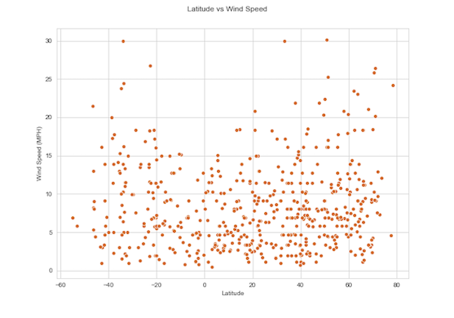
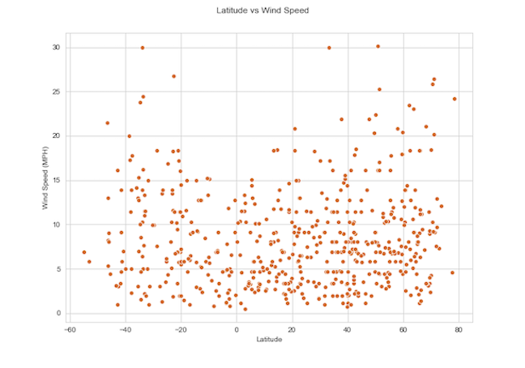

Summary: Latitude vs. X

The purpose of this project was to analyze how weather changes as you get closer to the equator. We used citipy to generate a random list of longitude and latitudes and selected cities closest to those coordinates. Then, using OpenWeather API, we created a dataset for over 500 cities.
We then, used factors including cloudiness, windspeed, temperature, and humidity, we used Matplotlib to compare each city's latitude and one of those factors. This site displays the data and visualizations created as part off that analysis. Descriptions are included.
Visualizations
 
